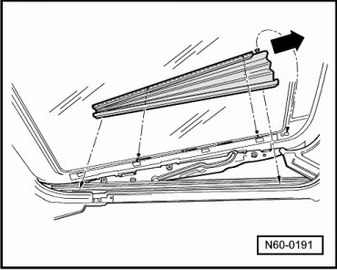
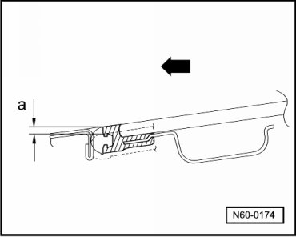
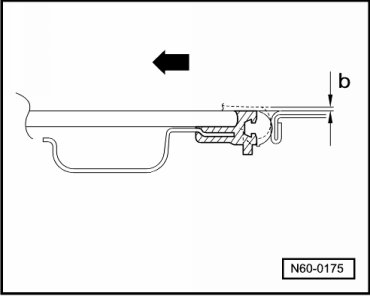

Sunroof Glass Panel, Height Adjustment
Sunroof with Glass Panel Overview
Sunroof Glass Panel, Height Adjustment
Sunroof neutral position OK.
- Tilt the glass panel open.
- Slide sun shade rearward.
- Unclip the boot from the lower strip beginning at the rear.

- Then unclip the boot from upper strip beginning at the front.
- Push the boot back - arrow - out of the oblong hole and remove it.
- Move the glass panel to the neutral position.
- To prevent wind noise, adjust the front and rear height of the glass panel as shown in the illustrations.
Front panel adjustment:

- a - = 0 to 1 mm lower than the roof
- Arrow - = Direction of travel (forward)
Rear panel adjustment:

- b - = 0 to 1 mm higher than roof
- Arrow - = Direction of travel (forward)
- Tighten glass panel bolts to 4.5 Nm.